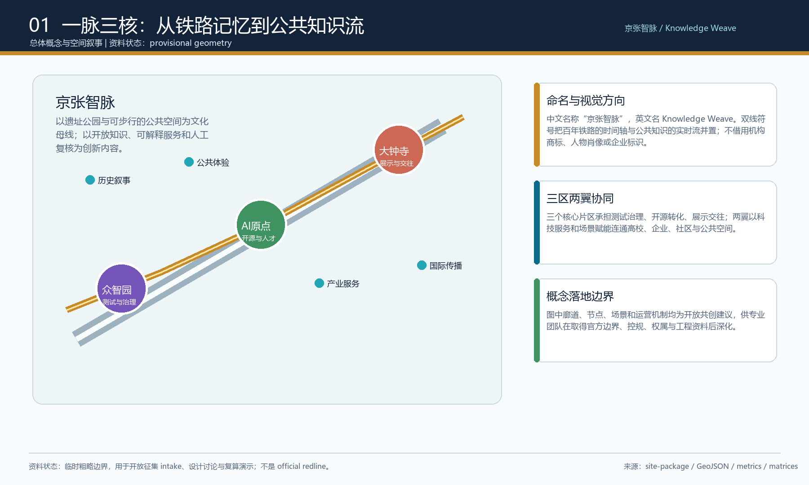
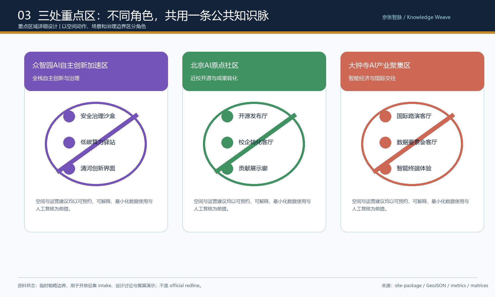
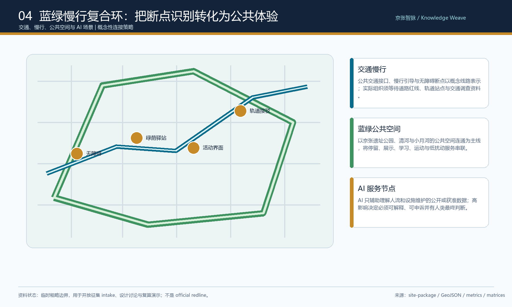
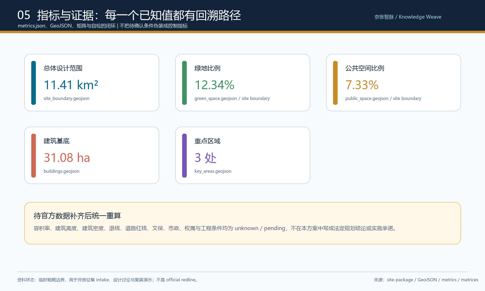

核心指标
数值以当前提交的 GeoJSON 与 metrics.json 为准；不把缺失的控规条件伪装为确定结论。
总览地图与五张证据图
每张图由同一组 geometry、metrics、矩阵与自检状态派生，临时边界在图面中始终按低对比约束表达。





重点区域、用地分区与建筑
每一处承担不同创新角色，同时通过公共知识脉共享体验、品牌和运营机制。用地分区、建筑、更新项目来自同一组结构化图层。
众智园
全栈自主创新、可信治理、低碳算力与清河公共界面。
AI原点社区
近校开源协作、成果转化、人才服务与贡献展示。
大钟寺
智能经济、国际路演、终端体验与城市交往。
十个 AI 场景卡
从产业测试到日常服务，统一采用公开或获准数据、最小化处理、可解释输出与人工最终判断。
模型、代码与成果以自愿展示和贡献记录为前提。
用于预约制、可审计的评测和标准讨论。
作为新型基础设施原型，等待能源条件校核。
只辅助识别可达性问题，保留人工复核。
服务发布、洽谈和跨文化交流。
结合公共空间与低扰动展示。
连接高校、园区、初创团队和服务机构。
以授权、合规与审计为前提。
面向居住、教育、医疗、法律等日常服务。
串联历史、开源、产业展示与公共体验。
任务覆盖、来源与假设
compliance_matrix 覆盖公告任务和 agent.1 至 agent.6；standard_matrix、design_depth_matrix、sources、assumptions 与 self_check 提供可追溯证据链。
来源
data/source_registry.json · project-official-announcement.md · agent-open-call-taskbook-0518.md · standards/references/*
资料与权利边界
official boundary / key-area polygons / regulatory controls / road redlines / ownership / municipal and heritage conditions remain pending.
本页离线静态打开，无 CDN、远程地图、外部脚本、外部字体、iframe、表单、API 或跟踪代码。图面是解释层；权威数据仍为 GeoJSON、metrics.json、矩阵与自检结果。